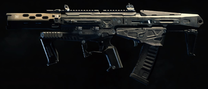

Call Of Duty Black Ops 4

Como número 3, tenemos al subfusil Maddox, con una cadencia extrema, gran manejo y movilidad y una excelente velocidad de recarga y de apuntado.
Como número 2, tenemos a la ametralladora ligera Zweihänder, con elevada cadencia, 50 balas en su cargador, elevado daño y movilidad decente para ser una ametralladora ligera.
Como número 1, tenemos a la Blundergat, arma secreta difícil de conseguir, mediante easter egg o huevo de pascua o a base de suerte probando en la caja de armas mágica, capaz de eliminar de un solo disparo a casi cualquier zombie, cuanto menor es la distancia, mayor el daño, totalmente demoledora gracias a su daño extremo y velocidad de recarga rápida.